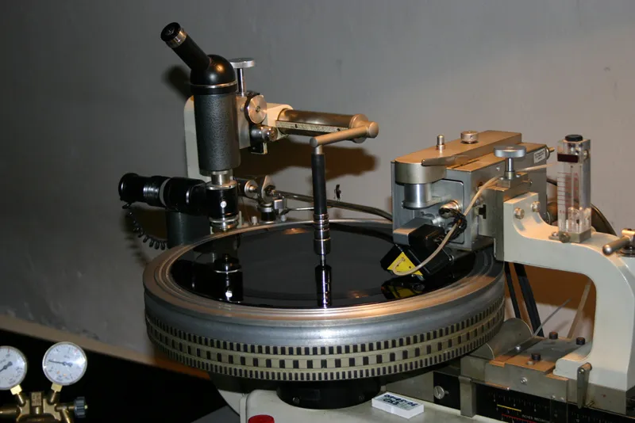
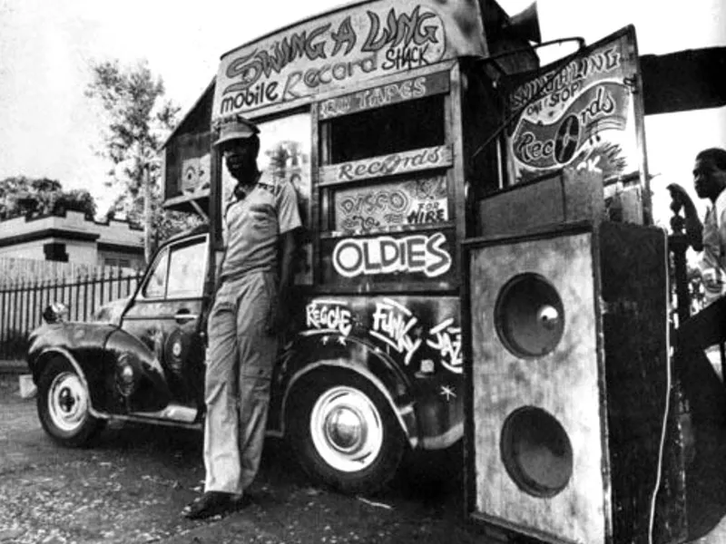

Todo comenzó con una impresión inacabada de The Paragon - On The Beach, en la que se omitieron las voces durante la impresión de una placa dub en 1968.

Una placa dub es un disco de acetato barato y único con una vida útil limitada de unas 50 escuchas antes de degradarse. Se suele usar para demos, sellos blancos, versiones inéditas, masters alternativos, pruebas y lanzamientos iniciales de sencillos antes de que la versión final salga en vinilo.
Según la leyenda, un operador de sonido Rudolph "Ruddy" Redwood tomó el sencillo mal impreso y lo puso en una de esas legendarias fiestas jamaicanas (de donde provienen el rap y el dancehall).
Esto llamó la atención de Bunny Lee, productor del famoso sello jamaicano Treasure Isle. Sintiendo una tendencia de moda, Bunny se acercó al ingeniero de sonido del estudio, Osbourne Ruddock, para hacer más de estas pistas instrumentales de reggae, rocksteady y ska.
El Sr. Ruddock ya había fabricado mesas de mezclas a medida para maximizar el impacto de los efectos de eco, delay y fase, que exhibía en sus propios conciertos con soundsystem. Rara vez tuvo la oportunidad de explorar su potencial en el estudio de grabación, ya que tales artimañas se consideraban poco más que una novedad. El proceso de grabación en aquellos tiempos siempre priorizaba a los cantantes y músicos, nunca a los productores.

Sin embargo, con el éxito inesperado de esa versión mal impresa, Ruddock recibió repentinamente luz verde para hacer todo tipo de cosas interesantes con temas instrumentales. No decepcionó, creando una serie de sencillos doblados para los soundsystems jamaicanos de la competencia, con muchos sencillos nuevos que exigían su toque especial en las caras B.
Con el tiempo, los remixes de Ruddock tuvieron tanta demanda que montó su propio estudio. Allí, improvisaba equipos antiguos y nuevos hasta tal punto que su consola de mezclas se convirtió en su propio instrumento electrónico, manipulando las pistas a su antojo con precisión. Otros destacados productores jamaicanos pronto aprenderían su oficio, y el Sr. Ruddock les mostró el camino, cambiando para siempre la forma de crear instrumentales de reggae. Pasaría a la historia como uno de los productores más influyentes, no solo en la historia de la música jamaicana o de la música electrónica, sino en toda la historia de la música.
Se llamaba Osbourne Ruddock, pero también se le puede llamar King Tubby.
Si bien los LP de dub jamaiquino se volvieron más raros después de principios de la década de 1980, el estilo ha sido muy influyente en el desarrollo de la música electrónica al desarrollar el concepto moderno de remix y formar las raíces del Dancehall, mientras que el sonido y el nombre han pasado a géneros como Dub Techno, Ambient Dub y Dubstep.